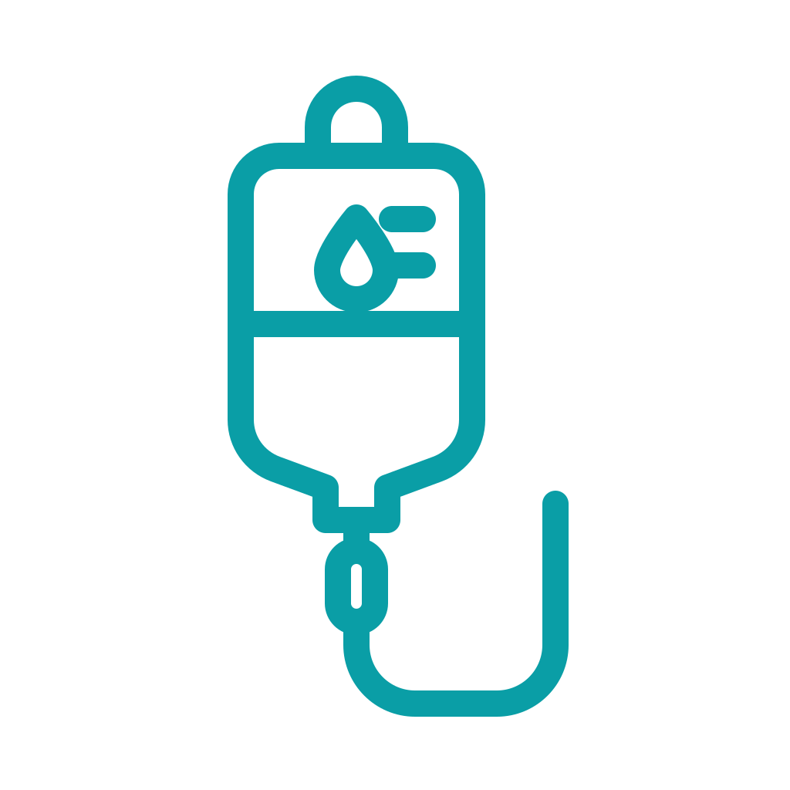

Oralna i intravenska sedacijaOral and intravenous sedation
Zahvat bez straha: pacijent ne oseća bol i najčešće ne pamti ništa od intervencije.Treatment without fear: the patient feels no pain and usually remembers nothing of the procedure.
Dve vrste sedacijeTwo kinds of sedation

Intravenska sedacijaIntravenous sedation
Daje se kroz venu uz anesteziologa. Pacijent je polusvestan, ne oseća bol i obično se ne seća zahvata. Počinje oko 15 minuta pre operacije, a lokalna anestezija se dodaje kada pacijent utone. Anesteziolog stalno prilagođava dozu i može je produbiti do sna ili vratiti pacijenta u polusvesno stanje.Given through a vein with an anaesthesiologist present. The patient is semi-conscious, feels no pain and usually does not remember the procedure. It begins about 15 minutes before surgery and local anaesthesia is added once the patient is sedated. The anaesthesiologist keeps adjusting the dose, deepening it to sleep or bringing the patient back to a semi-conscious state.
Oralna sedacijaOral sedation
Jedna do dve tablete (na primer Lexilium ili Bensedin, ili slično) sat vremena pre zahvata. Nije potrebna priprema ni anesteziolog, a lokalna anestezija se i dalje daje. Pre svega smiruje pacijenta i namenjena je manjim zahvatima i osobama kojima su duge posete teške ili imaju strah.One to two tablets (for example Lexilium or Bensedin, or similar) an hour before the procedure. No preparation or anaesthesiologist is needed and local anaesthesia is still given. It mainly calms the patient and is meant for smaller procedures and people who find long visits hard or have dental fear.
Šta se dešava tokom intravenske sedacijeWhat happens during IV sedation
- Pacijent je u tom stanju tokom celog zahvata, obično 2 do 3 sataThe patient stays in this state for the whole procedure, usually 2 to 3 hours
- Primaju se jak analgetik, lek protiv otoka i antibiotik, pa posle nije potreban dodatni lekStrong pain relief, an anti-swelling drug and an antibiotic are given, so no extra medication is needed afterwards
- Pacijent može da čuje i odgovori na poziv, slično snu, što je važno kod implantoloških radovaThe patient can hear and respond to calls, similar to sleep, which matters in implant work
- Anesteziolog prati pacijenta tokom celog zahvataThe anaesthesiologist monitors the patient throughout
Za koga jeWho it suits
- Veliki implantološki radovi, poput ALL ON 6, ili više vađenja zuba odjednomLarge implant work such as ALL ON 6, or several extractions in one session
- Dugi zahvati, na primer priprema mnogo zuba za fasete ili mostoveLong procedures, for example preparing many teeth for veneers or bridges
- Izražen strah od zubara ili želja da se zahvat ne pamtiStrong dental anxiety or a wish not to remember the procedure
- Za manje zahvate intravenska sedacija nije potrebnaFor minor work IV sedation is not needed
Bezbednost i oporavakSafety and recovery
- Pre sedacije anesteziolog uzima kompletnu anamnezuBefore sedation the anaesthesiologist takes a full medical history
- Pacijent je prvi minut dezorijentisan, zatim obično traži da vidi nove zubeThe patient is disoriented for the first minute, then usually asks to see the new teeth
- Ne sme da se vozi posle sedacije i treba da ide kući u pratnjiMust not drive after sedation and should go home accompanied
- Pažnja može da varira nekoliko satiAttention may fluctuate for a few hours
CenaPrice
Intravenska sedacija nudi se samo za radove vredne više od 2.000 €. Većina pacijenata ALL ON 6 rada je plaća, ali je opciona: zahvat može da se uradi i uz regionalnu anesteziju i tablete, bez doplate.IV sedation is only offered for work worth more than 2,000 €. Most ALL ON 6 patients pay for it, but it is optional: the procedure can be done with regional anaesthesia and tablets at no extra charge.
Sedacija, anestezija i opšta anestezijaSedation, anaesthesia and general anaesthesia
Sedacija smanjuje reakciju na nadražaje, od blage relaksacije do potpune neosetljivosti. Anestezija znači odsustvo odgovora na bol i može biti sa sedacijom ili bez nje. Opšta anestezija spaja potpunu sedaciju, potpunu analgeziju i amneziju i radi se isključivo u bolnici. Ordinacija navodi da njena intravenska sedacija ima neke efekte opšte anestezije, bez njenih rizika.Sedation reduces the reaction to stimuli, from mild relaxation to full unresponsiveness. Anaesthesia means no response to pain and can occur with or without sedation. General anaesthesia combines full sedation, full pain relief and amnesia and is hospital-only. The clinic says its IV sedation has some effects of general anaesthesia without its risks.
Pošaljite snimak i dobijte plan lečenjaSend your X-ray and get a treatment plan
Online pregled je besplatan. Odgovor stiže uglavnom u roku od oko 48 sati, sa opcijama lečenja i planom po fazama.The online exam is free. A reply usually arrives within about 48 hours, with treatment options and a plan by phase.